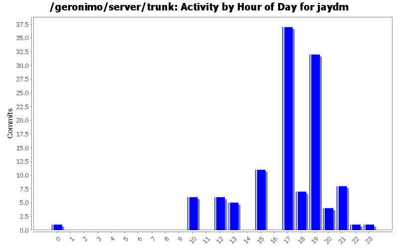
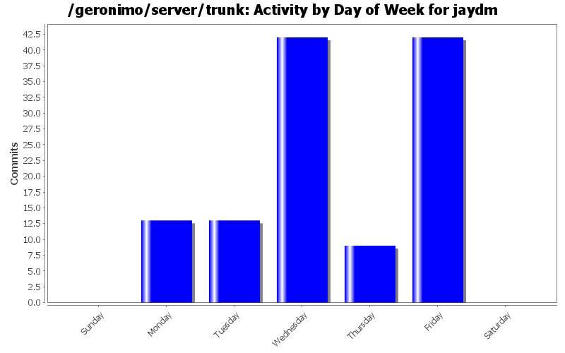
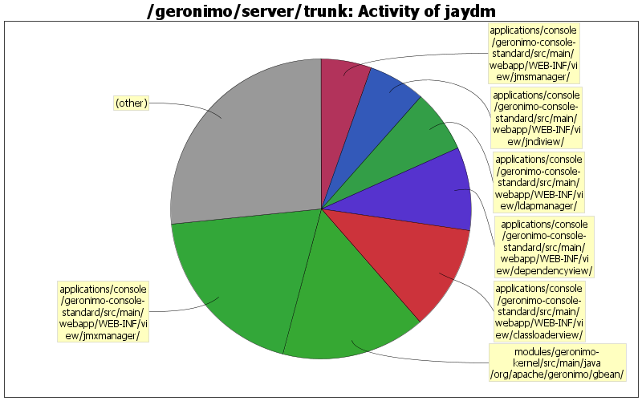

GERONIMO-2732: Committed the changes to switch to the published
Dojo artifacts.
24 lines of code changed in 5 files:
GERONIMO-4325 Repackaged the mini release bundle. Everything in the original bundle
was nested in an additional 'dojo' directory. Removed the extra directory level so
that all existing references to the dojo.js file would not need to be touched.
1 lines of code changed in 2 files:
GERONIMO-4108
Remove the previous version of Dojo (1.1.0) and replace it with
the latest release (1.1.1)
1 lines of code changed in 3 files:
GERONIMO-3921
Duh - length is a function (oops)
1 lines of code changed in 1 file:
GERONIMO-3921
getContextRoot() should return "" for apps deployed to the root context.
7 lines of code changed in 1 file:
GERONIMO-3855
Oops - Missed these. Thanks Joe.
0 lines of code changed in 1 file:
GERONIMO-3855
Replace pinned copy of Pluto to stop the exception that is being thrown
whenever the admin console is being accessed over https and a two (or more)
page deep portlet is accessed.
1 lines of code changed in 8 files:
GERONIMO-3451
Missed committing the second patch file
0 lines of code changed in 1 file:
GERONIMO-3451 - Use a new snapshot of tomcat
Includes security fix for webdav as well as 'restricted listeners' message
3 lines of code changed in 4 files:
Changed the log level on the proxy/no proxy message from 'warn' to 'info'
2 lines of code changed in 1 file:
Properly open the fmt:message tag
0 lines of code changed in 2 files:
Some forward steps in having comments at all levels of config.xml:
Added a default 'top level' comment to the test.
Re-added a default comment to the top level of the config.xml that is generated.
Minor cleanup (added a getter and setter for comment) to the GBeanOverride.
41 lines of code changed in 3 files:
Reverted the change of the jspc plugin version since
it was made to correct a problem building on windows.
1 lines of code changed in 1 file:
Upgrade jspc-maven-plugin and groovy-all versions to
get past a missing castor jar (this was causing build
failures)
2 lines of code changed in 1 file:
Changed simple string appending to using StringBuilder to increase performance
as suggested by Jarek (thanks for the suggestion)
98 lines of code changed in 5 files:
Added serial version IDs to modified classes
(to protect backward compatibility test)
9 lines of code changed in 5 files:
Added methods to allow gbean info to be returned as xml.
(similar to 'toString' methods)
176 lines of code changed in 6 files:
GERONIMO-1265 - Preserve comments added by users in config.xml file
- Changes inspired by patch from Don Hill - Thanks Don!
80 lines of code changed in 7 files:
GERONIMO-3271 - Update the xml files that currently reference attributes-1.1.xsd to 1.2
9 lines of code changed in 21 files:
GERONIMO-3266 - Second revision of schema
- Corrected the attributes level comment
- Corrected the gbean level comment
19 lines of code changed in 1 file:
(5 more)